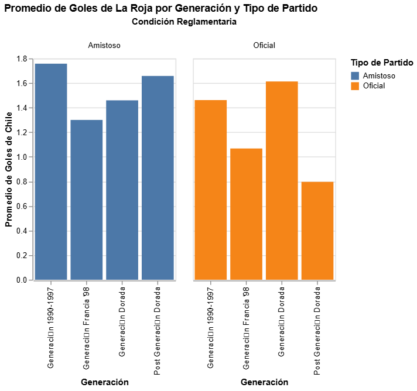

El mito de la Generación Dorada
La Generación Dorada suele ocupar un lugar privilegiado en la memoria del fútbol chileno. Sus títulos y actuaciones internacionales instalaron la idea de que fue la mejor selección de la historia. Pero ¿esa superioridad también se observa cuando se comparan sus estadísticas con las de otras generaciones?
Para responder esta pregunta, este análisis compara el rendimiento de distintas etapas de la selección chilena y distingue entre partidos amistosos y encuentros oficiales. La hipótesis de trabajo sostiene que la Generación Dorada presenta el mejor porcentaje de victorias y la mejor diferencia de goles en competencias oficiales, como Copa América, Clasificatorias y Mundiales.
¿Por qué importa distinguir el tipo de partido?
No todos los encuentros tienen el mismo carácter competitivo. Los amistosos permiten probar jugadores y esquemas, mientras que los partidos oficiales se disputan por un resultado dentro de una competencia. Por eso, reunir ambos tipos de partidos en una sola cifra puede ocultar diferencias relevantes entre generaciones.
La base de datos fue organizada según generación y condición reglamentaria —amistoso u oficial— para observar cómo cambia el rendimiento al separar ambas categorías. Esta distinción permite avanzar desde una comparación general hacia otra centrada en los encuentros competitivos.
Los goles también cuentan una historia

El gráfico muestra una diferencia entre el rendimiento goleador en amistosos y oficiales. En los partidos oficiales, la Generación Dorada registra el promedio más alto entre las cuatro generaciones comparadas, con cerca de 1,6 goles por encuentro. Le siguen la generación de 1990–1997, con aproximadamente 1,46; la generación de Francia 98, con cerca de 1,07; y la etapa posterior a la Generación Dorada, con alrededor de 0,8 goles por partido.
En los amistosos, en cambio, la generación de 1990–1997 alcanza el promedio más alto, seguida por la etapa posterior a la Generación Dorada. La comparación evidencia por qué conviene separar los encuentros según su condición: el orden de las generaciones no es necesariamente el mismo cuando se modifica el tipo de partido considerado.
De todos modos, el promedio de goles a favor no basta por sí solo para determinar cuál fue la mejor selección. Para evaluar la hipótesis también es necesario contrastar el porcentaje de victorias y la diferencia entre goles a favor y en contra en partidos oficiales.
La comparación pendiente
La investigación busca responder tres preguntas: ¿qué diferencia existe en el porcentaje de victorias de la Generación Dorada frente a las demás generaciones en partidos oficiales? ¿Qué generación presenta el mejor rendimiento neto, considerando los goles a favor y en contra? ¿Cuánto cambia la comparación cuando se excluyen los amistosos?
¿Se sostiene la superioridad?
Los primeros resultados del promedio goleador oficial son consistentes con la hipótesis inicial: la Generación Dorada aparece en el primer lugar de las generaciones incluidas en esta visualización. Sin embargo, esta evidencia es parcial. La conclusión definitiva dependerá de revisar también el porcentaje de victorias y la diferencia de goles en partidos oficiales. Así, la pregunta no se resuelve solo desde el recuerdo de sus triunfos, sino mediante una comparación histórica basada en datos.